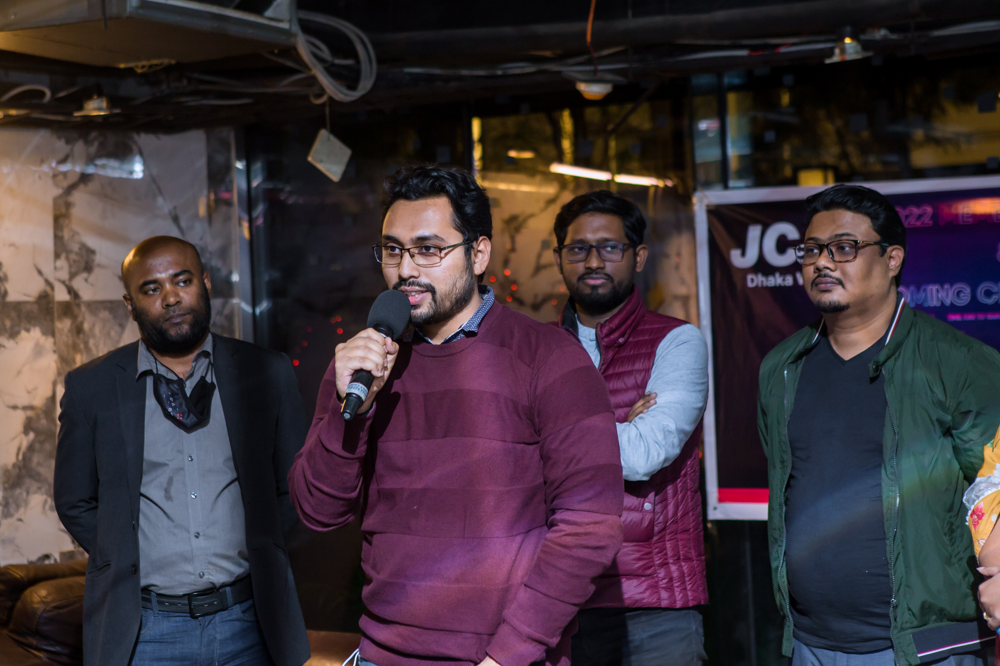
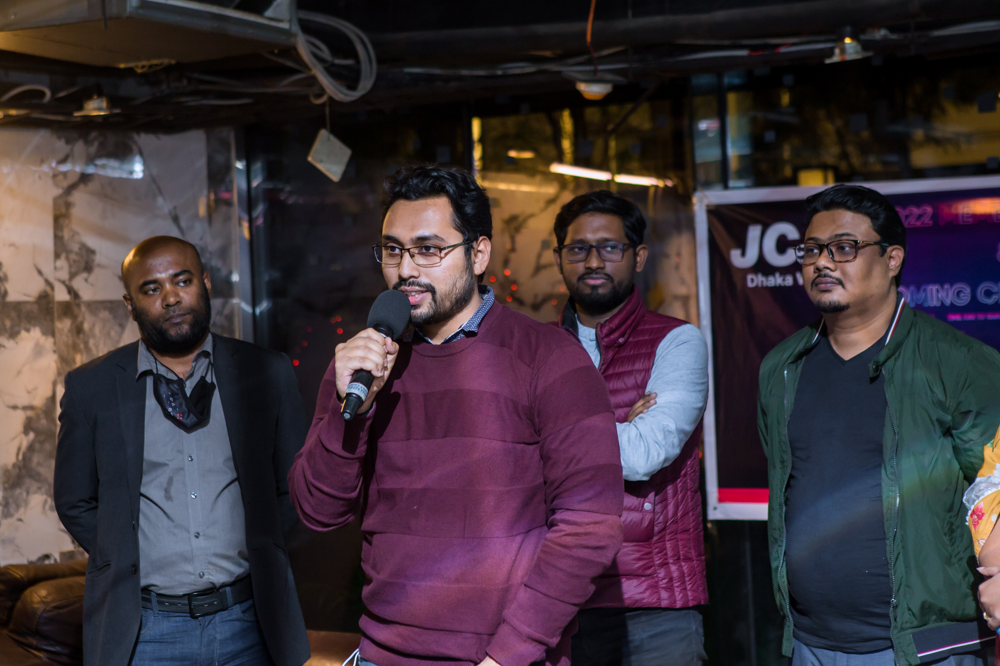

Who am I?
Hello! I'm Nur Mohammad Ali, a Doctor of Engineering student at Lamar University, Texas. I am passionate about research, innovation, and creating real-world solutions through data, AI, and technology.
Education
- Doctor of Engineering (Industrial Engineering) - Lamar University, USA
- MBA in Marketing - Jahangirnagar University, Bangladesh
- M.Engg in Industrial Engineering - Lamar University, USA
- BSc in Electrical and Electronic Engineering - AIUB, Bangladesh
Professional Journey
I have hands-on experience in the automotive, electronics, and manufacturing industries, contributing to supply chain optimization, forecasting, and innovation projects.
Hobbies & Interests
- ✈️ Traveling and Road Trips
- üé¨ Watching Korean Movies
- üìö Learning New Technologies
- üöó Exploring Automotive Innovations
Fun Facts
- Visited 12+ states in the USA
- Love spontaneous road trips
- Passionate about personal growth and leadership
Life Moments


 

“Dream big, work hard, stay humble.”